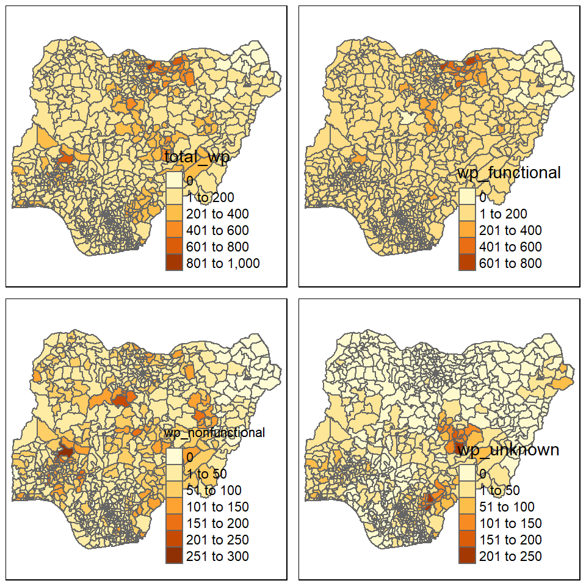

pacman::p_load(sf, tmap, tidyverse, spdep, funModeling)In-Class Exercise 2: Geospatial Analytics for Social Good
1 Overview
Access to safe water, sanitation and hygiene is the most basic human need for health and well-being. Despite efforts in raising the access to these basic services, according to the Sustainable Development Goals Report 2022 issued by the United Nations, by 2030, 1.6 billion people will lack safely managed drinking water, 2.8 billion people will lack safely managed sanitation, and 1.9 billion people will lack basic hand hygiene facilities.
To address the issue of providing clean and sustainable water supply to the rural community, a global Water Point Data Exchange (WPdx) project has been initiated. The main aim of this initiative is to collect water point related data from rural areas which then allows governments and their partners to make use of the data to improve decisions on a regular basis.
2 Objectives
Geospatial analytics offers a tremendous potential to solving societal problems. One such analytics is spatial autocorrelation which helps understand the degree to which one object is similar to its surrounding objects.
The objectives of this take-home exercise are as outlined in the following:
Using appropriate sf method, import the shapefile into R and save it in a simple feature data frame format. Any one of the three Projected Coordinate Systems of Nigeria, EPSG: 26391, 26392, and 26303 can be used.
Using appropriate tidyr and dplyr methods, derive the proportion of functional and non-functional water point at LGA level.
Combining the geospatial and aspatial data frame into simple feature data frame.
Performing outliers/clusters analysis by using appropriate local measures of spatial association methods.
Performing hotspot areas analysis by using appropriate local measures of spatial association methods.
3 The Data
In this exercise, we will analyse the data from Nigeria. There are 2 datasets used, as outlined in sections 3.1 and 3.2.
3.1 Aspatial Data
Data was downloaded from WPdx Global Data Repositories on 24 November 2022 in a csv format. The WPdx+ data set was filtered for “nigeria” in the column clean_country_name before downloading. There is a total of 95,08 unique water point records.
3.2 Geospatial Data
Nigeria Level-2 Administrative Boundary (also known as Local Government Area, LGA) polygon features GIS data was downloaded from geoBoundaries.
4 Getting the Data Into R Environment
4.1 Getting Started - Setting up the environment
In the following code chunk, p_load() from pacman package is used to install and load the following R packages into the R environment:
sf,
tidyverse,
tmap,
spdep, and
funModeling
4.2 Import Nigeria LGA boundary data into R environment
The following code chunk uses st_read() from sf package to import the geoboundaries shapefile into R and saves the imported geospatial data into a simple feature data table.
nga <- st_read(dsn = "geodata",
layer = "geoBoundaries-NGA-ADM2",
crs = 4326)The above printout shows the data is in wgs84 geographic coordinate system. This is the required format as we will be using st_intersects() later which requires the data to be in wg84 coordinate system.
In the following, write_rds() of readr package is used to save the extracted sf data table into an output file in rds format. The following code chunk saves the output file in the geospatial folder.
write_rds(nga,
"geodata/nga.rds")4.3 Import csv file into R environment
We will use read_csv() to read the csv file as shown in the following code chunk.
wpd <- read_csv("geodata/wpdx_nigeria.csv")The two fields #lat_deg and #long_deg are in decimal degree format. We will then convert wpd data frame into a simple feature data frame by using the following code chunk and ensuring the data has the same wgs84 geographic coordinate system by specifying .
The two fields #lat_deg and #long_deg are in decimal degree format. As a best guess, we will assume that the data is in wgs84 Geographic Coordinate System (i.e. the Geodetic coordinate system for World). We will then convert wpd data frame in to a simple feature data frame by using the following code chunk. Note that for data conversion, longitude should be supplied as the first argument in coords which is then followed by the argument for latitude.
wpd_sf <- st_as_sf(wpd,
coords = c("#lon_deg", "#lat_deg"),
crs=4326) From the printout above, we can see that the data is in the format that we want, i.e. wgs84.
Similarly, we will use write_rds() from readr package to save the extracted sf data frame into an output file in rds format. The following code chunk saves the output file in the geopatial folder.
write_rds(wpd_sf,
"geodata/wpd_nga.rds")4.4 Data Wrangling for Water Point Data
4.4.1 Recoding NA values into string
We will then load the data in rds format. In the following code chunk, we will also rename the column from #status_clean to status_clean for easier handling in subsequent steps. In addition, replace_na() is used to recode all the NA values in status_clean into unknown.
wp_nga <- read_rds("geodata/wpd_nga.rds") %>%
rename('status_clean' = '#status_clean') %>%
mutate(status_clean = replace_na(status_clean, "unknown"))4.4.2 EDA
freq(data = wp_nga,
input = 'status_clean')It can be observed that there are different classification within functional water points and within non-functional water points. We will create 2 separate dataframes each containing either type of functional water points.
4.5 Extracting Water Point Data
In this section, we will extract the water point records by using classes in status_clean field. In the following code chunks, filter() from dplyr is used to select functional water points.
wp_functional <- wp_nga %>%
filter(status_clean %in%
c("Functional",
"Functional but not in use",
"Functional but needs repair"))wp_nonfunctional <- wp_nga %>%
filter(status_clean %in%
c("Abandoned/Decommissioned",
"Abandoned",
"Non-Functional due to dry season",
"Non-Functional",
"Non functional due to dry season"))wp_unknown <- wp_nga %>%
filter(status_clean == "unknown")To check whether the filtering was performed correctly, we can run the following code chunks and reconcile the number of records with that in Section 4.4.2.
freq(data = wp_functional,
input = 'status_clean')freq(data = wp_nonfunctional,
input = 'status_clean')freq(data = wp_unknown,
input = 'status_clean')The output shows that filtering was performed successfully.
4.6 Performing Point-in-Polygon Count
Next, we want to find the number of functional water points in each LGA as well as the number of total, functional, non-functional, and unknown water points in each LGA. This is performed in the following code chunk. First, it identifies the functional water points in each LGA by using st_intersects(). Next, length() is used to calculate the number of functional water points that fall inside each LGA.
nga_wp <- nga %>%
mutate(`total_wp` = lengths(
st_intersects(nga, wp_nga))) %>%
mutate(`wp_functional` = lengths(
st_intersects(nga, wp_functional))) %>%
mutate(`wp_nonfunctional` = lengths(
st_intersects(nga, wp_nonfunctional))) %>%
mutate(`wp_unknown` = lengths(
st_intersects(nga, wp_unknown)))4.7 Saving the Analytical Data Table
We will tabulate the proportion of functional water points and the proportion of non-functional water points in each LGA. In the following code chunk, mutate() from dplyr package is used to derive two fields, namely pct_functional and pct_nonfunctional
nga_wp <- nga_wp %>%
mutate(pct_functional = wp_functional/total_wp) %>%
mutate(pct_non_functional = wp_nonfunctional/total_wp)Now that we have the tidy sf data table, we will save it in rds format for subsequent analysis.
write_rds(nga_wp, "geodata/nga_wp.rds")5 Visualising the Spatial Distribution of Waterpoints
We will visualise the spatial distribution of function and non-functional water points using a choropleth. This is performed using the code chunk below.
nga_wp <- read_rds("geodata/nga_wp.rds")
total <- qtm(nga_wp, "total_wp")
wp_functional <- qtm(nga_wp, "wp_functional")
wp_nonfunctional <- qtm(nga_wp, "wp_nonfunctional")
unknown <- qtm(nga_wp, "wp_unknown")
tmap_arrange(total, wp_functional, wp_nonfunctional, unknown, asp=1, ncol=2)